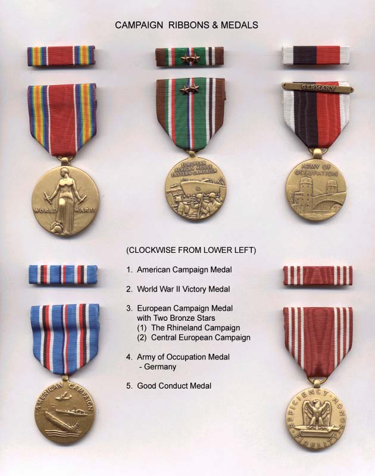

|
Table of Contents < - - - return
Shoulder Sleeve Insignias & _______________________ Shoulder Sleeve Insignias (Patches) worn by Bob Gallagher (at different times) during his military service.
Campaign Ribbons and their accompanying medals awarded to Bob Gallagher. 
United States Army, Antiaircraft Artillery, Third Army, European Theater.
Full World War II Story - Table of Contents < - - - return
Copyright, Robert F. Gallagher, 1999 - 2015, all rights reserved on all images and content. gallagherstory.com |